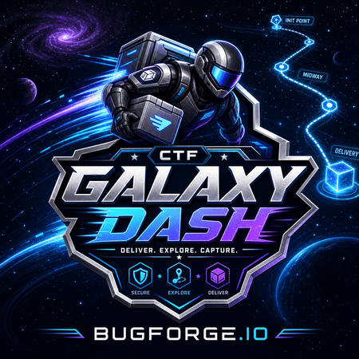
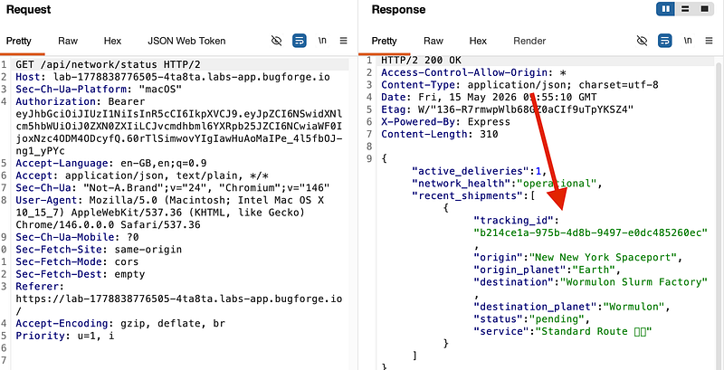
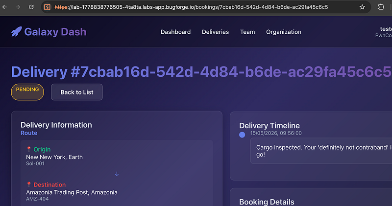
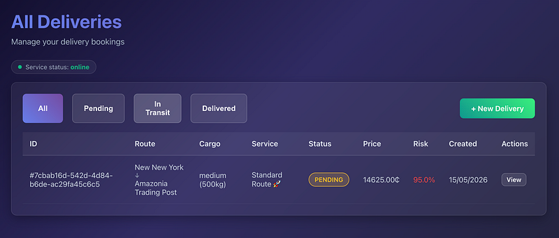
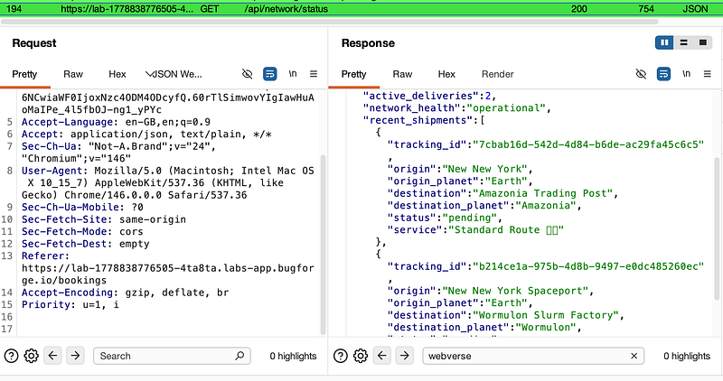
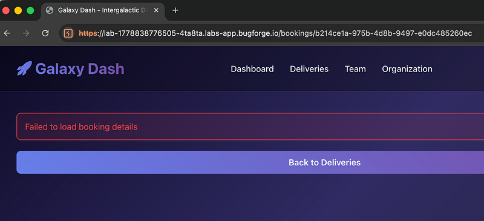
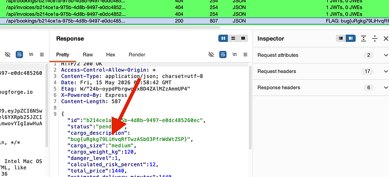

OSCP · OSWP · PWPP · PWPA · PAPA · EnCE · Linux+ · LPIC-1 · Network+ · Security+ · Pentest+ · eJPT · eWPT · BSc · PGCert
Galaxy Dash (IDOR)
Lab can be found at: https://bugforge.io

First, I registered an account:
POST /api/register HTTP/1.1
Host: lab-1778837617861-zq0qot.labs-app.bugforge.io
Content-Type: application/json
{“username”:”7s26simon”,”email”:”7s26simon@7s26simon.com”,”password”:”Password1!”,”org_name”:”PwnCorp”}
I set off my crawler and saw a hit to /api/network/status and it returned a 200 OK. This was interesting. Why? Because there was an “active delivery”. Huh? But I didn’t make a delivery?? I had literally just signed up to the app?
So now, I’m thinking there’s some kind of possible IDOR going on.

I took a note of the tracking_id: “b214ce1a-975b-4d8b-9497-e0dc485260ec” for later usage. For now, I set up my own delivery (via the “Deliveries” link at the top) and looked at the URL, /bookings/<booking ID>

I looked at the status of my delivery and saw it was pending. But interestingly enough, it seemed to perform a check in the background traffic.

Could it be a case of replacing my delivery ID with the tracking ID I found earlier? I went back to /api/network/status and saw my delivery (ending in 6c5) had been added as delivery #2. Ok. Now I’m thinking that this endpoint is leaking all deliveries:

I browsed to /bookings/<tracking_id> (the delivery I didn’t make) and got an error:

In the background traffic had loaded the booking information and the flag was in the cargo_description parameter:

Thanks for following along!
🍺 Quick message to readers: if my writeups help you, please consider a small donation to my buymeacoffee link here. This is not required but is very much appreciated! 🍺